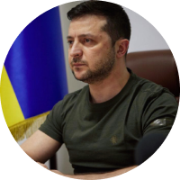

Україна
в майбутньому
Аналізуємо минуле, теперішнє та майбутнє
Формуємо образ нової успішної України. Досліджуємо формування менталітету, козацтво та розвиток технологій в одному проекті!

Аналізуємо минуле, теперішнє та майбутнє
Формуємо образ нової успішної України. Досліджуємо формування менталітету, козацтво та розвиток технологій в одному проекті!


Ми - хлібороби. На СВОЇЙ землі господарюємо, сворюємо, дбаємо про оселю
Повністю


Ми з покон-віків - громади, які включають об’єднання індивідуальностей
Повністю

Фольклор розповідає правду, бо ми учасники, творці історі їта представляємо її, так як є
Повністю

У нас колядки, щедрівки, де возвеличують господаря, господиню, урожай
Повністю
Саме козаки були авторами та реалізаторами ідеї української держави та її легітимації у міжнародній спільноті як незалежної держави

Відвага, вірність, здатність до самопожертви, любов до Батьківщини - такі характеристики успадкував український народ у козаків
Турецький літописець Наїма писав про запорожців: “Можна впевнено сказати, що неможливо знайти на цілій землі сміливіших людей, які так мало б дбали про мвоє життя і так мало боялися смерті”
Блакитне небо на прапорі України та жовте жито, ще одна ознака нашого прагнення думками відірватися від землі та полетіти в безкрайнє небо, вийти за межі простору.
Саме тому українці реалізовували прагнення вийти за межі за допомогою розвитку авіаконструкторських заводів.
Підприємство "Антонов" створило гордість України, який став сиволом українського непереможного духу - "Мрію" - найбільший транспортний літак у світі.
Читати більше
Ми показуємо усьому світові, як говорити правду в очі та бути вірним своєму народу, своєму вибору та стояти за нього - ми чесні з собою та іншими, відважні та стоїмо один за одного
Ми подаємо приклад всьому світові, як жити в умовах невизначеності, та ще й знаходимо в собі сили підказувати іншим, що робити для підтримки миру у всьому світі - ми креативні.
Ми не піддаємось залякуванню та продовжуємо маленькими кроками досягати своєї мети - ми сильні духом, в нас є воля. Свобода - найбільша цінність для нас.
Ми можемо жити без вказівок, та самоорганізовуватись, спираючись лише на гуманістичні, людські цінності - ми за мир у всьому світі, і ми зможемо показати, як цього досягти.


"Вчора ми втратили, на жаль, нашу "Мрію". Але стару "Мрію". А нову ми зараз будуємо. Слава Україні!"
В період трансформації Україна продовжує розквітати вже в новому, цифровому світі

Україна першою у світі запустила юридично легалізовані цифрові паспорти

На порталі "Дія" доступні онлайн вже понад 70 державних послуг, зокрема реєстарція ФОП

Україна займає четверте місце у світі за частотою оплат мобільними пристроями

Україна легалізувала криптосектор і посідає четверте місце за кількістю користувачів криптовалютою

Україна посідає перше місце у світі за внеском у науку та технології

Україна займає перше місце серед східноєвропейських країн за ІТ-аутсорсингом та науково-дослідницькою роботою

Україна зможе зформулювати свої ціннісні орієнтири та транслювати їх на весь світ, а саме: Можливо все, навіть те, у що ви не вірите! А вихід за рамки самого себе - це більш гуманістично, ніж постійно прагнути вийти за рамки технологічного розвитку
Українці, як нація, стають зразком волевиявлення та прикладом побудови демократичних відносин не ”згори донизу”, а “знизу догори”!

Україна стає найбільш популярним та поширеним символом свободи, віри, правди та сміливості у всьому світі. Все буде Україна!

Україна запрошує до першого в світі проекту колективної відбудови країни, в якій будуть задіяні ініціативи різних країн світу. Таким чином Україна дає можливість всьому світові відчути, що таке колективна стратегія та транслює нову етику відносин в світі

Україна згадає про своє прагнення до неба та сонця, й запропонує новий проект: щоб закінчити війни на Землі, давайте будемо співпрацювати для нашого нового життя в космосі


Ярослав Стецько

Степан Бандера

Святослав Вакарчук

Олександр Довженко

Іван Багряний

Олександр Довженко